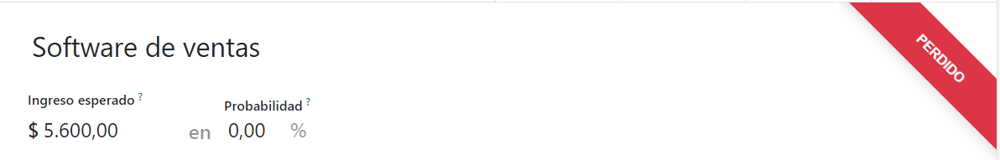

Manage lost opportunities¶
Not all opportunities result in successful sales. In order to keep the pipeline up to date, lost opportunities need to be identified. Specifying the reason why an opportunity was lost provides additional insight that can prove useful for future opportunities.
Mark a lead as lost¶
To mark a lead as lost, open the application, and select a lead from the pipeline, by clicking on its corresponding kanban card. Doing so reveals that lead’s detail form.
Then, click Lost, located at the top of the lead’s detail form.

This opens the Lost Reason popup. From the drop-down, choose an existing lost reason. If no applicable reason is available, create a new one by entering it into the Lost Reason field, and clicking Create.
Additional notes and comments can be added below the lost reason designated in the Lost Reason field.
When all the desired information has been entered in the Lost Reason pop-up window, click Submit.

Upon clicking Submit, the pop-up window disappears, and Odoo returns to the lead detail form, where a new red Lost banner is now present in the upper-right corner of the lead.
Create/edit lost reasons¶
To create a new lost reason, or edit an existing one, navigate to .
To edit an existing reason, click on the reason that should be modified. When clicked, that reason becomes highlighted. Once highlighted, change the description of the selected lost reason by editing the Description field. When done, click Save in the upper-left corner.
To create a new lost reason, click Create in the upper-left corner of the Lost Reasons page. Doing so reveals a new blank line in the Description field. Then, proceed to type in the new lost reason in that new line. Once ready, click Save.
Retrieve lost opportunities¶
To retrieve lost opportunities in Odoo CRM, open the to the main Pipeline dashboard. Then, click the Filters drop-down menu, located beneath the search bar.

From the Filters drop-down menu, select the Lost option. Upon selecting
Lost, only the leads that have been marked as Lost appear on the Pipeline
page.
To filter leads by a specific lost reason, select . Doing so reveals another drop-down menu with three fields.
In the top field drop-down menu, select Lost Reason. In the second field drop-down menu, select Contains. Then, in the third field of the Add Custom Field sub menu, type in the specific keyword(s). Lastly, click Apply. Upon clicking Apply, Odoo reveals all the lost leads with a reason that contains that specified keyword(s).

Restore lost opportunities¶
To restore a lost opportunity, navigate to the main Pipeline dashboard on the CRM app, open the Filters drop-down menu, and select the Lost option. Doing so reveals all the lost opportunities on the Pipeline page.
Then, click on the kanban card of the desired lost opportunity to restore, which opens that lead’s detail form.
From the lost lead’s detail form, click Restore in the upper-left corner. Doing so removes the red Lost banner from the lead form, signifying the lead has been restored.

Restore multiple opportunities at once¶
To restore multiple opportunities at once, navigate to the main Pipeline dashboard in the CRM app, open the Filters drop-down menu, and select the Lost option.
Next, select the list view option, which is represented by the three-line ☰ (list) icon in the upper-right corner. Doing so places all the leads from the Pipeline page in a list form. With the list form chosen, select the checkbox to the left of each desired opportunity/lead to be restored.
Once the desired opportunities/leads have been selected, click the ⚙️ Action (gear) drop-down menu at the top of the Pipeline page. From the ⚙️ Action (gear) drop-down menu, select Unarchive.
Doing so removes those selected lost opportunities from the Pipeline page because they
no longer fit into the Lost filter criteria. To reveal these newly-restored leads, delete the
Lost filter from the search bar.

See also